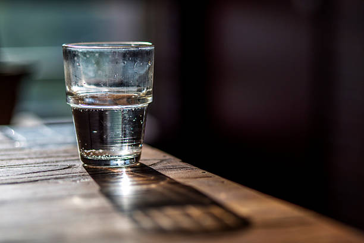
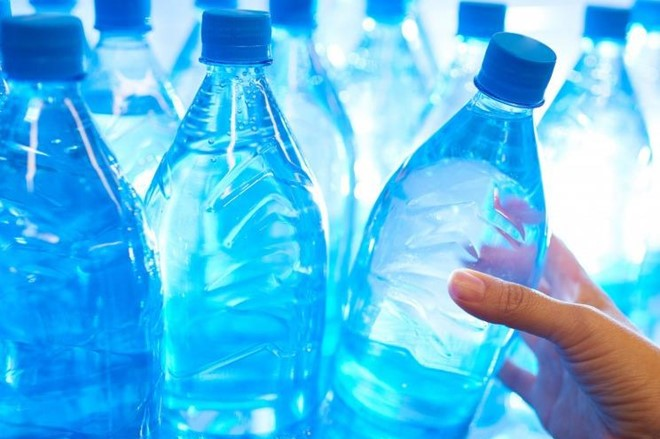
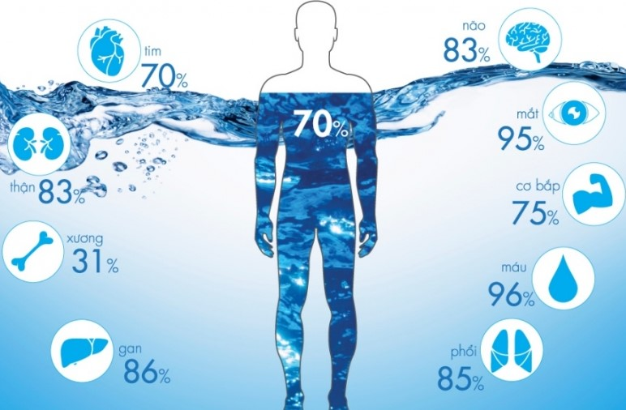
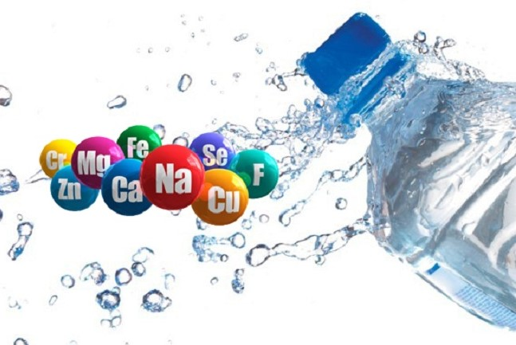

Clean water sources are gradually running out, replaced by polluted water !!!
1.What is clean water
 
Clean water is transparent water, colorless, odorless, tasteless, does not contain microorganisms or solutes harmful to human health.
It is a valuable resource, but not endless. Water is essential to life, but when altered, pollution can cause immeasurable hazards to humans. Clean water is indispensable in human life, every day we have to use clean water for eating, bathing, washing, cleaning, etc. In addition, the use of clean water in industrial and agricultural production to create clean food is also an important determinant of human health.
2.The important roles of clean water:
- Clean water plays an extremely important role in the human body, as water accounts for 70-80% of body weight. An adult can fast for a few days, even a few weeks but can’t help drinking water for 3-4 days. Clean water has a role in the body as follows:
- Water has the ability to supply minerals, transport essential nutrients to the cells, nourish cells in all activities in the body. The clean water we use in daily life contains lots of healthy minerals.
- Clean water is considered as a living solvent of chemical reactions in the body, participating in metabolism and metabolic reactions to build and maintain cells. The cells that can function and perform their functions due to being dissolved in a solvent.
- Water has the ability to eliminate toxins, residues that organs and cells can’t absorb. And they are taken out through urine and feces.
- Water also has the ability to stabilize body temperature, distribute the body's heat. Water makes the body release temperatures when the ambient temperature is higher than the body temperature. 
- In addition, the water has a lubricating effect on the contacts of the jointing, synovial fluid and periplasts, making the joints flexible. It also has a damping effect on the eyes and spinal cord, including the fetus in amniotic fluid.
>> Therefore, the use of clean water in daily life, in agricultural and industrial production to meet the needs of human life is a decisive factor to the health of each person and the whole community. Polluted water sources will cause intestinal diseases such as cholera, dysentery, typhoid, etc; dermatological, eye, gynecological diseases such as: ringworm, fungal disease, tinea versicolor, scabies, eczema, pinkeye, trachoma, conjunctivitis, conjunctivitis, vaginitis, etc; These diseases can be transmitted to healthy people by the main cause of lack of water and the use of contaminated water for daily activities. In addition, using water contaminated with heavy metals for a long time can cause cancer.
Main content of the page
- -Concept of clean water and its role
- -Real situation of clean water around the world and in Vietnam
- -Concept of polluted water and its causes
- -Remedy for polluted water
Page information
-
 Overview
Overview
-
Suggestion box
-
Telephone number: 0706893807
Overview